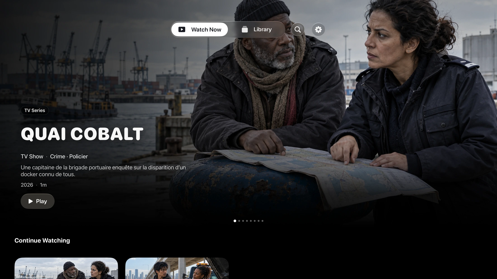
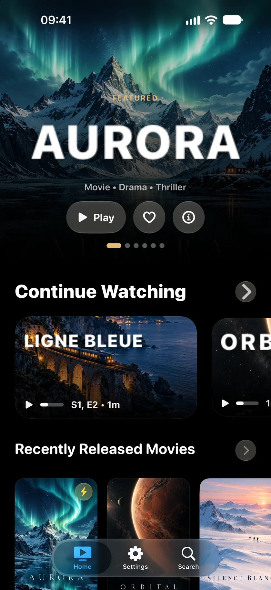
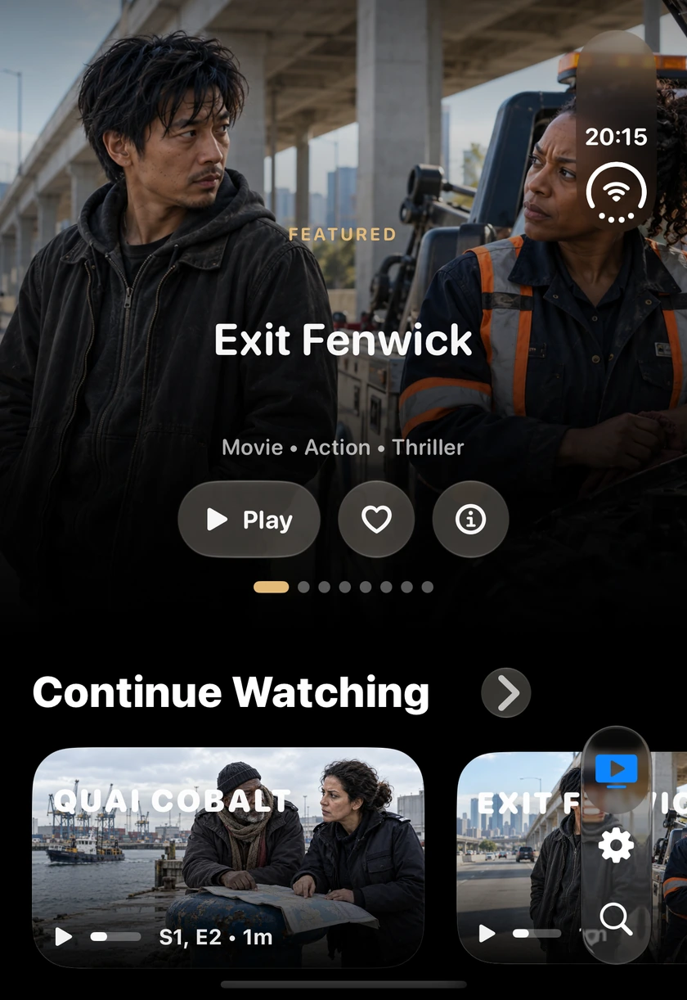
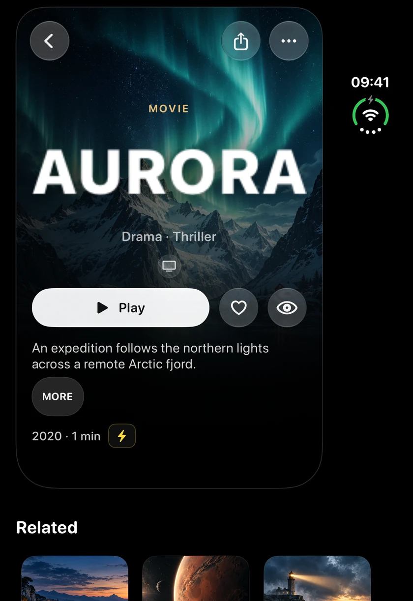
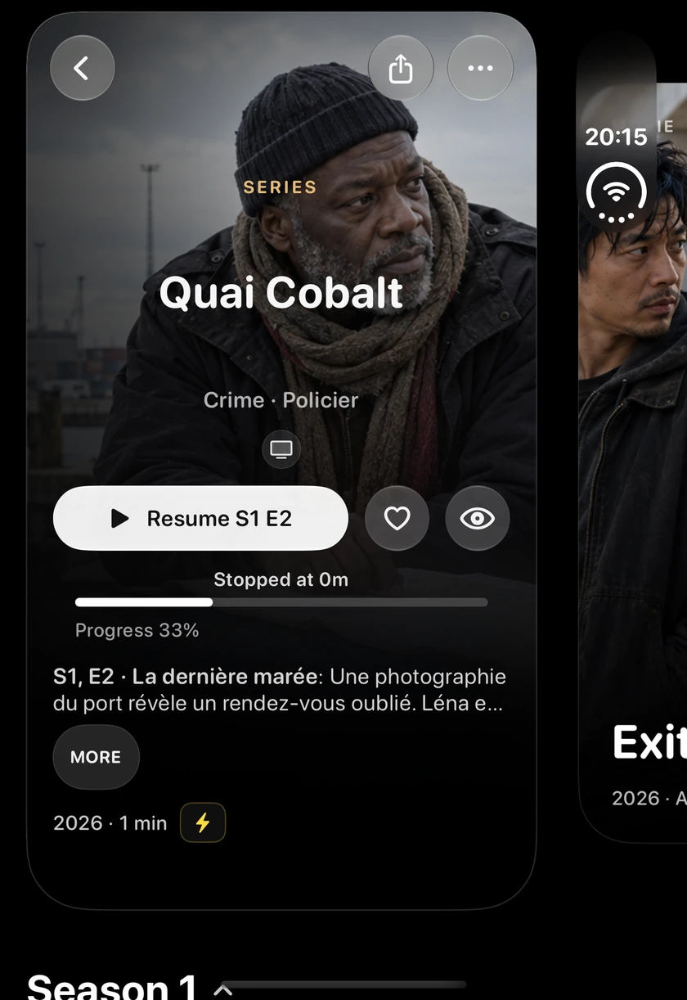
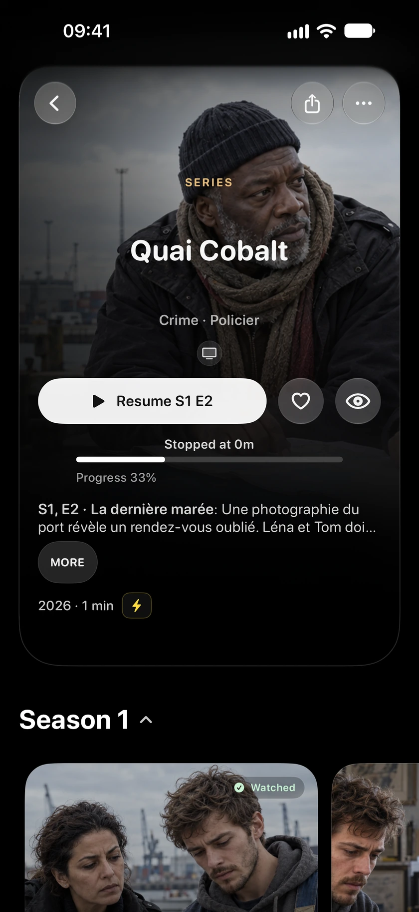
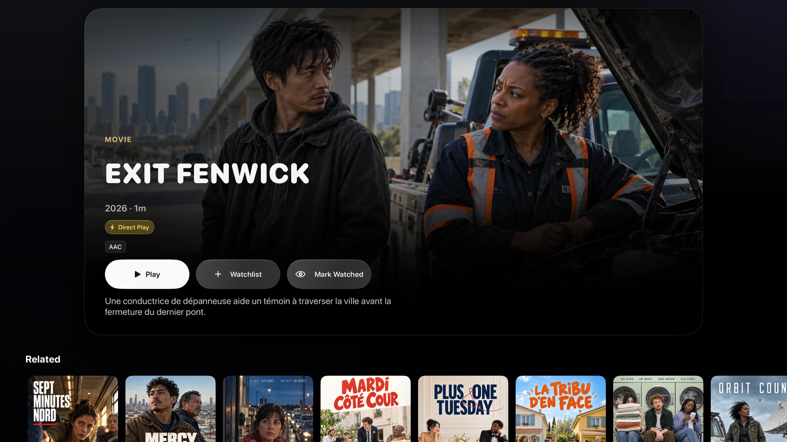

Your library, close at hand.
Find your Home, library rows and Continue Watching on the compact outer screen.
A native Jellyfin experience, made for iPhone Duo.
Your library on iPhone, iPad and Apple TV.
iPhone · iPhone Duo · iPad · Apple TV
Explore the iPhone Duo experience

Demonstration library · Fictional artwork · Movies and shows not included
Your Jellyfin library,
within reach on the outer screen.



ReelFin on the iPhone Duo outer screen · Demonstration library · Content not included
Find your Home, library rows and Continue Watching on the compact outer screen.
Main sections and back controls stay accessible, with layouts that respect the screen’s usable space.
Open a series and find the episode you were watching, with your progress ready to resume.
From one more episode to a new favourite. Everything you came to watch, one tap away.
Your Continue Watching, synced with Jellyfin. Get back to the film or episode you left behind.

Your films, your shows, your collections. Find them on your own Jellyfin server.
Download compatible films and shows on iPhone and iPad. Your library travels with you.
A home for your library.
Built for the remote.

Clear focus, generous artwork and a native experience designed for the couch.
Choose from the tracks available for your title, right where you watch.
Play your original media when the file and device support it. Jellyfin can help when needed.
iOS / iPadOS 26+
tvOS 26+
In development
Yes. ReelFin is a client for your own Jellyfin server, or a server you are authorised to use. Enter the server address and sign in to your Jellyfin account.
No. You bring your library. The screenshots and poster artwork on this page use a fictional demonstration collection; no movies or shows are supplied with the app.
Direct Play depends on the file, codecs, subtitles and device. ReelFin uses native Apple playback, and Jellyfin may remux or transcode a file when it needs help.
On iPhone and iPad, you can download compatible titles when your Jellyfin account allows downloads. File compatibility and available storage still apply. Downloads are not available on Apple TV.
Your session token is stored in Apple Keychain. ReelFin does not sell your personal data or use cross-app tracking. Optional crash diagnostics may be enabled in a production build. Read the privacy policy.
A dedicated Mac experience is in development. It is not available for public download yet. ReelFin is currently available for iPhone, iPad and Apple TV.
On the App Store. Connect your own Jellyfin server.